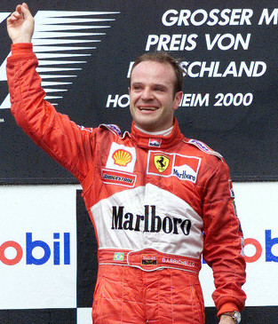
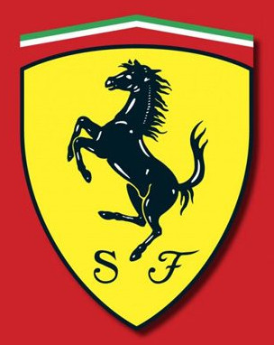
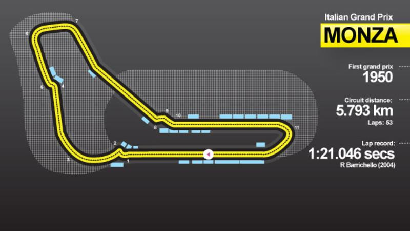

Érdekességek a Forma-1 világából
T�rt�nete
A kezdetek:
A Forma-1 gy�kerei eg�szen a 20. sz�zad els� �veiig vezethet�k vissza, az aut�versenyz�s b�lcs�j�be, Franciaorsz�gba. Az els� nagyd�jat, grand prix-t 1906-ban rendezt�k, a Renault-t vezet� gy�ztes pedig nem volt m�s, mint a magyar Szisz Ferenc.A Forma-1 sz�let�se:
M�r a 30-as �vekben felmer�lt a grand prix-k vil�gbajnoks�gba val� szervez�se, de a m�sodik vil�gh�bor� k�zbesz�lt, �gy az eur�pai aut�versenyz�s csak a 40-es �vek v�g�n �ledt �jra. Az els� bajnoki id�nyt pedig 1950-ben rendezt�k, a legels� futam a silverstone-i Brit Nagyd�j volt.A Forma-1 aranykora:
Az F1-be 1977-ben bel�p� Renault hozta a sport�g k�vetkez� nagy �j�t�s�t. A francia gy�rt� turb�motorjai kezdetben ugyan siralmasan megb�zhatatlanok voltak, de a technol�gia elterjedt �s egy �vtizedig uralta a sz�guld� cirkuszt, az er�forr�sok az eg�szen elk�peszt�, 1000 l�er� feletti teljes�tm�nyt is hozt�k. Manaps�g tal�n az 1980-as �vekre tekintenek legt�bben aranykork�nt, amikor Nelson Piquet, Alain Prost, Nigel Mansell, Ayrton Senna k�zd�tt a Brabham, a McLaren, a Lotus �s a Williams aut�iban �lve.A '90-es �vek:
A Forma-1-ben tulajdonk�ppen csak Mansell '92-es r�vbe �r�se, Prost '93-as visszavonul�sa �s Senna '94-es hal�la z�rta le v�gleg a 80-as �veket, ezut�n emelkedtek fel a korszak �j szt�rjai.Napjaink:
A Ferrari �s Schumacher tot�lisan uralta a 2000-es �vtized elej�t, �t �ven kereszt�l minden bajnoki c�met begy�jt�tt. A Renault �s Fernando Alonso 2005-2006-ban t�rte meg a sorozatot, a f�szerep ezut�n m�r a k�vetkez� gener�ci��, napjaink szt�rjai� lett.Legtöbb nagydíj

- Rubens Barrichello (326)
- Kimi Räikkönen (315)
- Fernando Alonso (314)
- Jenson Button (309)
- Michael Schumacher (308)
- Felipe Massa (272)
Legtöbb megnyert futam

- Michael Schumacher (91)
- Lewis Hamilton (84)
- Sebastian Vettel (53)
- Alain Prost (51)
- Ayrton Senna (41)
- Fernando Alonso (32)
Bajnoki címek

- Michael Schumacher (7)
- Lewis Hamilton (6)
- Juan Manuel Fangio (5)
-
Alain Prost (4)
Sebastian Vettel (4)
Csapat bajnoki címek

- Ferrari (16)
- Williams (9)
- McLaren (8)
- Lotus (7)
- Mercedes (6)
- Red Bull (4)
Legfiatalabb versenyző

Max Verstappen 2015-ben 17 �ves �s 166 napos kor�ban indult az Osztr�k nagyd�jon.
Legidősebb versenyző

Louis Chiron 58 �vesen �s 288 naposan �llt rajthoz 1958-ban Monacoban.
Legtöbb Grand Prix
1950 �ta a legt�bb versenyt az olaszorsz�gi Monz�ban rendezt�k.